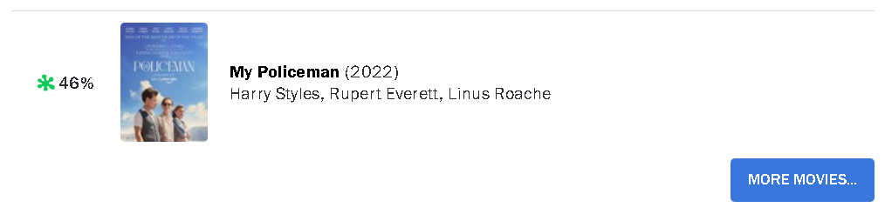
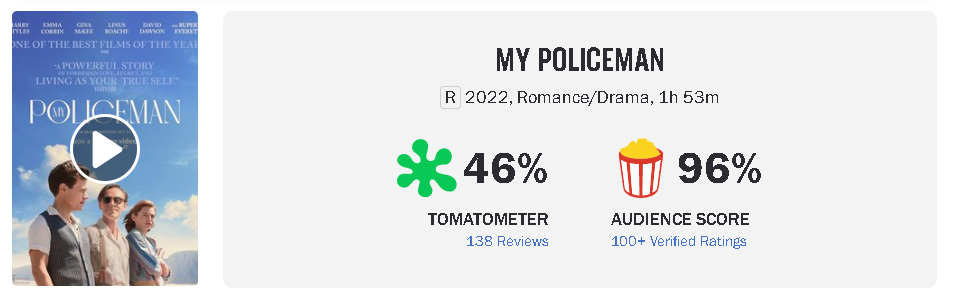

Dans un monde où l'accès à une quantité incroyable de contenus de divertissement est à la portée de tous, il devient de plus en plus difficile pour les utilisateurs de trouver le film ou la série qui correspond à leurs goûts et préférences. C'est là que l'algorithme de recommandation entre en jeu. Dans le cardre de l'UV IC05, nous avons réalisé d'un projet dont le but est de développer un système de recommandation de films efficace qui peut suggérer des films pertinents pour chaque utilisateur en utilisant des données de visionnage et de notation. Ces données sont alors collectés sur le site web Rottentomatoes qui contient tous les informations de base d'un film (Nom du film, Acteurs, Studio, Duration, L'année, etc..) et ainsi les scores d'évaluations de deux côtés, l'un est des critiques et l'autre du public.
Ce rapport détail les différentes étapes de l’étude et explique les différents choix réalisés. En premier temps, dans l'onglet "Méthode" nous présenterons la méthode que nous avons utilisé pour récupérer et ainsi la traitement des données. Ensuite, nous allons explorer différentes techniques d'apprentissage en IC05 pour analyser les données par les différents graphs. Et enfin, nous présenterons notre algorithm de recommandation basée sur le besoin d'utilisateur.
Pour cela, les questions clés que nous allons aborder dans ce projet sont : Quel est la tendance et l'évaluation du film à travers du temps par les deux côtés du public et des critques?Cette évaluation a-t-elle changé avec le temps ? Cela reflète l'évolution des critères d'évaluation des gens. De plus, les critiques et les notes des critiques comptent-elles vraiment dans l'évaluation d'un film? Cars lors de la recherche des films sur le site, 'RottenTomato' n'affiche que le rating des critques. Parfois il y a des films qui possèdent le mauvais rating de la part de critque (<50%) mais de la part du public, le rating est beaucoup mieux.
 Alors, pour l'étude des données, nous nous sommes concentré sur l'aspect d'évaluation des critiques et des audiences.